FILM & SERIAL
Arcane, dunia favorit.
Arcane jadi favoritku. Aku menyukai cerita yang berlapis, fantasi, dan estetika dengan ciri khas. Dari kisah yang hangat sampai aksi dan horor, selalu ada dunia lain untuk dikunjungi.
PORTOFOLIO · ANDHIKA PRIYATAMA
Halo, aku Andhika. Dari Denpasar, membawa rasa suka pada komputer, cerita fantasi, dan kenangan bersama tim baseball.
01 / PROLOG
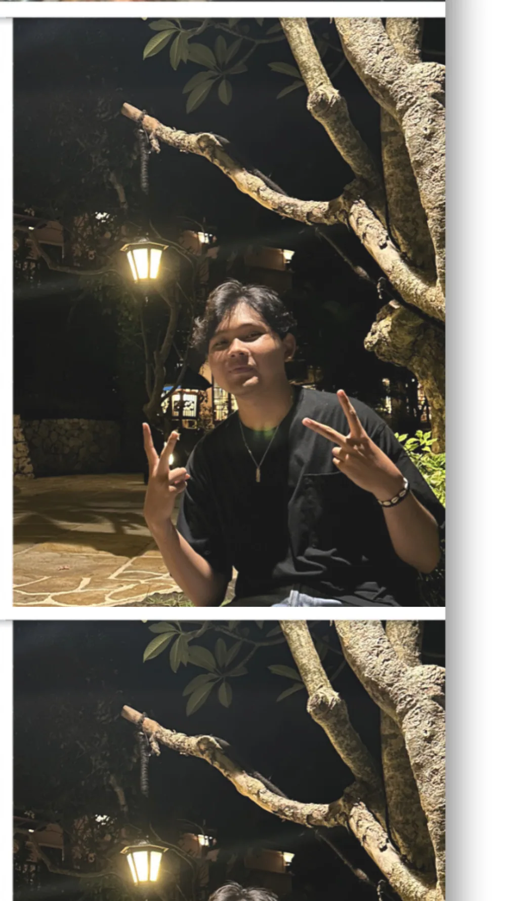
Empat pintu kecil untuk kenalan. Klik labelnya.
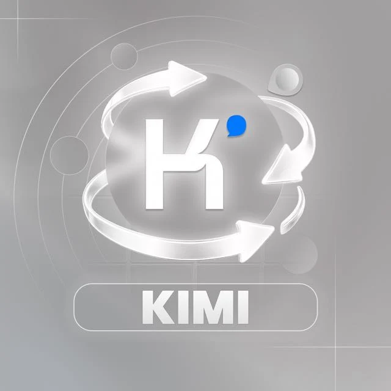
OPTIMUS 2026
Kelompok KIMI
DI BALIK HEADSET
Aku suka bermain Dota, Skyrim, dan Fallout. Dunia fantasi dan game open world selalu menarik perhatianku.
Temui aku di SteamSEBUAH JEDA
Barasuara, .Feast, Reality Club, Alkateri, Hindia, dan Perunggu adalah beberapa nama yang kusukai.
DI BALIK NAMA PENGGUNA
Ini akun Discord-ku. Kalau ingin kenalan atau ngobrol soal game, kamu bisa menemukanku di sana.
Buka profil xen.z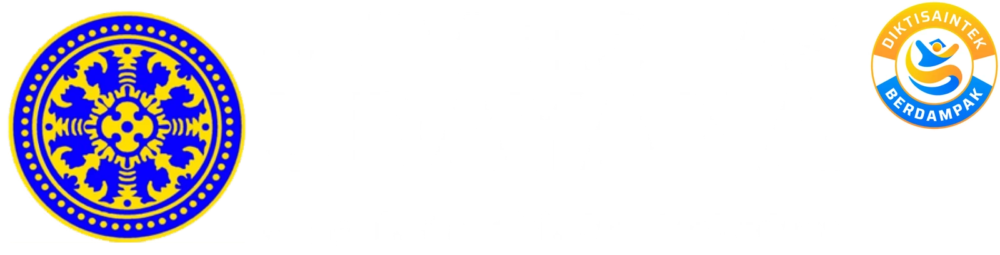
Universitas UdayanaFMIPA · Informatika · 2026
Perkenalkan, aku
Kadek Dwi Andhika Priyatama.
Biasa dipanggil Andhika. Aku berasal dari Denpasar, Bali, dan kini belajar Informatika di FMIPA Universitas Udayana, angkatan 2026.
Introvert, dengan sedikit sisi ekstrovert. Aku gampang tertawa karena hal-hal receh, dan kalau sudah tertawa, suaranya bisa cukup kencang. Aku ingin dikenal sebagai teman yang seru diajak bersama.
Sejak kecil, aku sudah akrab dengan komputer dan mengenal komponen seperti RAM dan CPU. Rasa suka itu terus terbawa sampai sekarang, dan menjadi alasan aku memilih Informatika. Di sini, aku ingin belajar lebih jauh tentang dunia yang sudah lama menarik perhatianku.
Kenalan lewat LinkedIn02 / TEMPAT BERTUMBUH
Dari bangku sekolah
ke bab baru di Informatika.
SEKOLAH DASAR
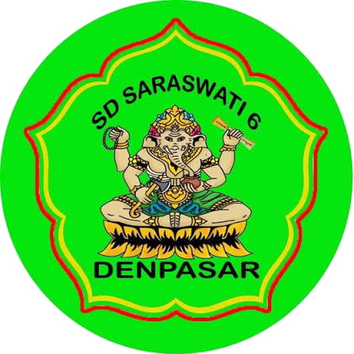
SEKOLAH MENENGAH PERTAMA
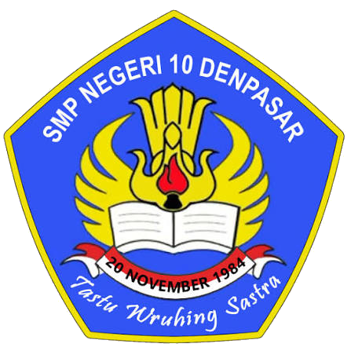
SEKOLAH MENENGAH ATAS
Matematika dan Ilmu Pengetahuan Alam (MIPA).
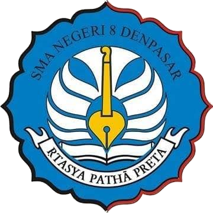
PERGURUAN TINGGI
S1 Informatika · FMIPA. Sedang menempuh pendidikan.
KEAHLIAN & ALAT BELAJAR
Aku memiliki dasar C++ dan Python, serta tertarik pada pengembangan backend. Saat ini aku juga mempelajari HTML, CSS, dan JavaScript melalui website portofolio ini.
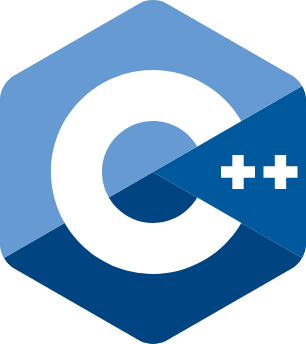
C++Dasar pemrograman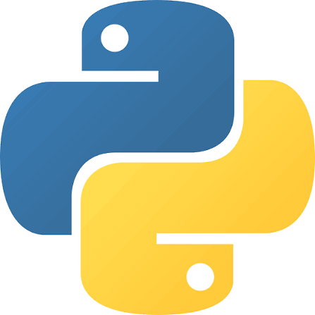
PythonDasar pemrogramanAgustus 2026 · Terdaftar sebagai peserta Google Skills Arcade Fasilitator melalui Dicoding.
03 / SEMESTA KECIL
Beberapa pintu masuk
untuk mengenalku lebih dekat.
FILM & SERIAL
Arcane jadi favoritku. Aku menyukai cerita yang berlapis, fantasi, dan estetika dengan ciri khas. Dari kisah yang hangat sampai aksi dan horor, selalu ada dunia lain untuk dikunjungi.
GAME & OPEN WORLD
Aku suka dunia fantasi dan kebebasan menjelajah dalam game open world. Skyrim dan Fallout ada di antara game yang kusukai, begitu juga Dota.
DI SEKITAR LAPANGAN
Aku senang sekali bisa mengenal baseball. Kalau bermain, biasanya aku di outfield. Namun, aku lebih sering ikut meramaikan suasana, membantu mengatur tim, atau memotret teman-teman.
Bagian tim hura-hura, kadang di balik kamera.LEBIH DEKAT DENGAN SELERAKU
SELA DI ANTARA BAB
Aku suka mendengarkan musik. Ini beberapa nama yang sering jadi pintu masuk ke seleraku.
04 / JEJAK PERJALANAN
Dari kebersamaan di tim
hingga halaman pertama.
2026 · PROYEK BELAJAR
Portofolio pertamaku untuk perkenalan sebagai mahasiswa baru. Di sini, aku menyatukan cerita pribadi, minat, dan pengalaman organisasi sambil mempelajari struktur HTML, gaya CSS, serta interaksi JavaScript.
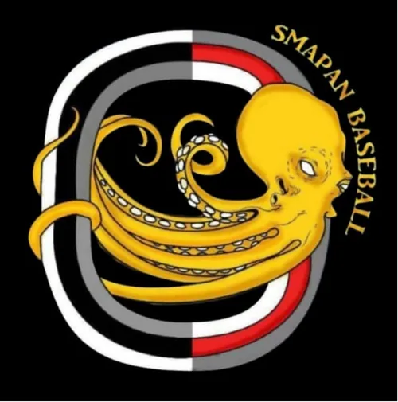
NOV 2024 - NOV 2025 · ORGANISASI
Di SMA Negeri 8 Denpasar, aku menjadi Ketua Klub Baseball pada November 2024 sampai November 2025. Peranku banyak berkaitan dengan pengelolaan tim. Di sela kebersamaan itu, aku juga sesekali memotret teman-teman.
PRESTASI BERSAMA TIM
Klik foto untuk melihat lebih besar.
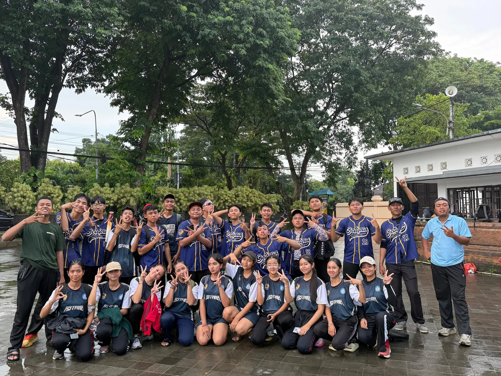
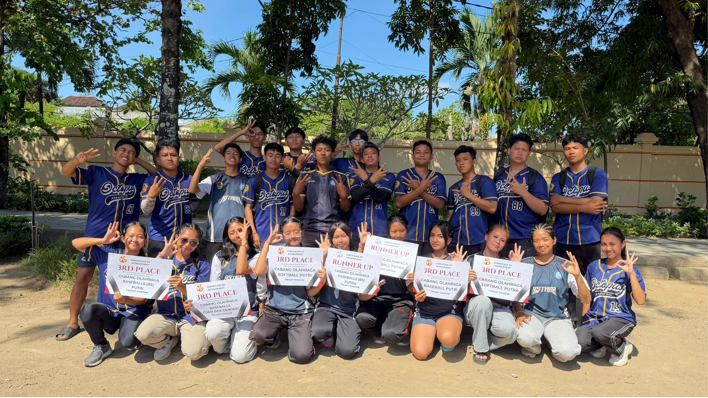
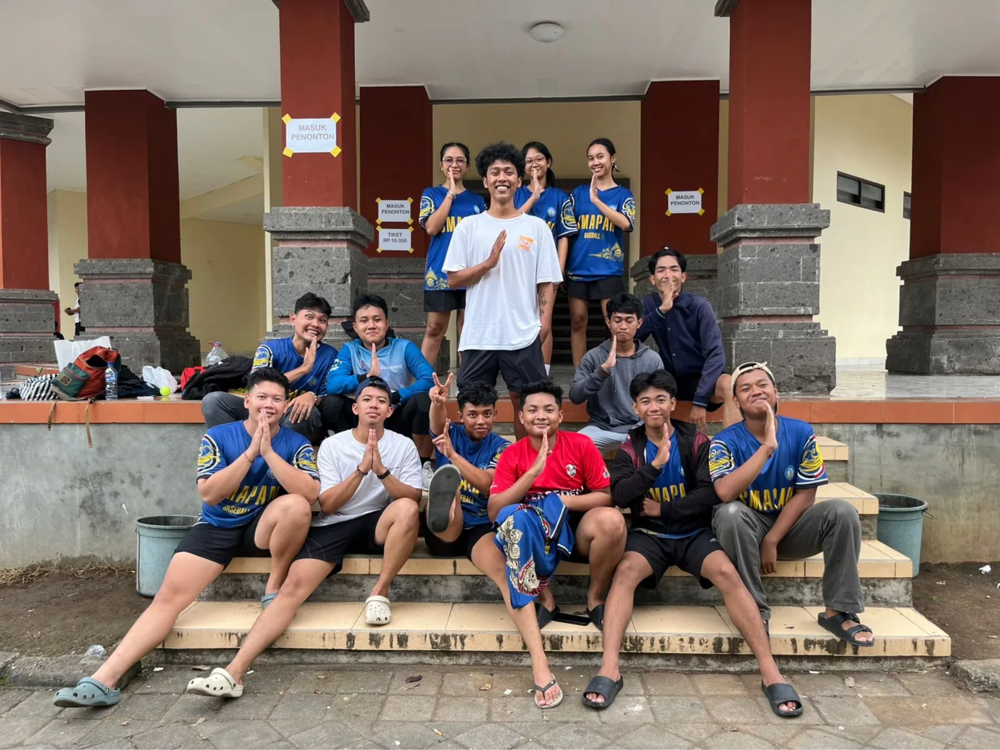
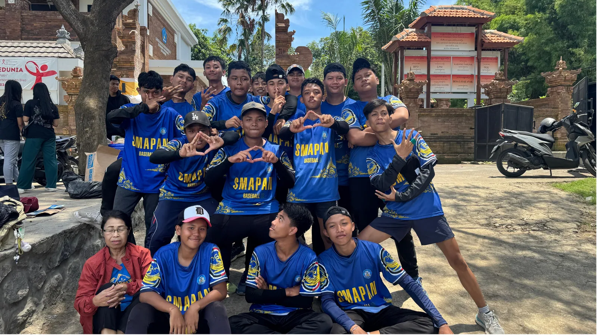
Ruang untuk karya-karya berikutnya masih terbuka.
05 / UNTUK HARI ESOK
Ada hal-hal yang ingin disimpan
di awal sebuah perjalanan.
Halo, aku dari halaman pertama.
Hari ini, banyak hal masih belum kuketahui. Semoga saat membaca ini lagi, ada sesuatu yang sudah kupelajari, seseorang yang sudah kukenal, atau karya kecil yang akhirnya berhasil kubuat.
Kalau perjalanan terasa panjang, ingat: kita pernah memulainya dari satu halaman kosong.
Pelan-pelan saja,
Andhika.
CATATAN AWAL · 2026
CERITANYA MASIH BERLANJUT
Boleh juga kenalan di luar jurnal ini.
Kembali ke awal